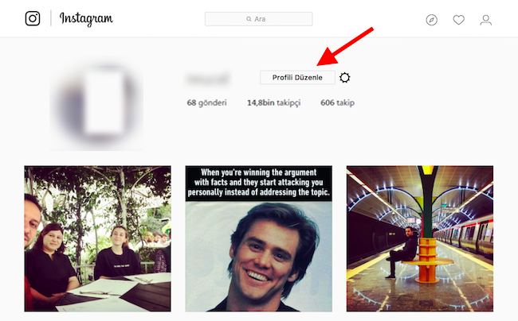
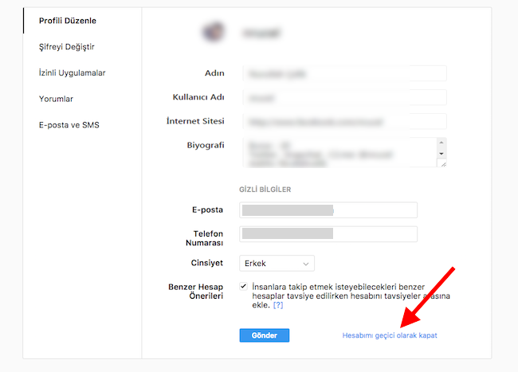
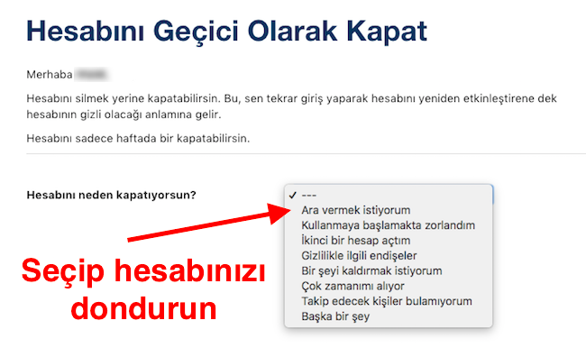

Instagram 'Üzgünüz, şifren yanlıştı' Sorunu Çözümü
Başlamadan önce lütfen instagram uygulamasından yada www.instagram.com sitesinden hesabınıza girin. Hesabınız Kitlenmiş yada yabancı yerden giriş yapıldı uyarısı verebilir.
Hesabınız kitlenmiş ise mail yada telefon numarası üzerinden yeni kod isteyerek hesabınızı aktif edebilirsiniz.
hesabınız da Bu sen miydin ? uyarısı ile karşılaşırsanız Bendim demeniz gerekmektedir.
İlk girişte hesabınızı kitleyebilir yukarıdaki gibi hesabınızı aktif edin. Tekrar giriş yaptığınızda tekrar şifre yanlış derse tekrar instagram hesabınıza girin. Bu sen miydin uyarısı verir bendim diyin. Artık giriş yapabilirsiniz.
Önemli Not: Bazı arkadaşlar hesabımı çaldın gibi şeyler yazıyor. Arkadaşlar eğer farklı bir siteye girmediyseniz. instagram takipçi hilesi Sadece bu siteye girip bu olay olmuşsa Instagram güvenlik amaçlı şifrenizi bloke etmiştir. Yani sizin şifrenizi geçersiz kılmıştır, o şifre ile giremessiniz artık hesabınıza. ücretsiz instagram hilesi Peki ne yapmam gerekli ? hemen buradan yada instagram.com yada instagram uygulaması üzerinden şifremi unuttum seçeneğini tıklayın. Sizden mail adresinizi yada kullanıcı adınızı ister. Kullanıcı adı yada mailinizi girdiğiniz zaman E-posta adresinize (mail adresinize) Şifre sıfırlama linki yollar. E-postanıza (mail adresinize) gelen bu linke tıklayarak kendinize yeni bir şifre oluşturabilir ve hesabınıza tekrar giriş yapabilirsiniz.
Yukarıdaki işlemleri yapınca giriş yapabilirsiniz. Eğer hala giriş yapamıyorsanız aşağıdaki adımları uygulayın.
Merhaba arkadaşlar bugün instagram mobil uygulamadan giriş yaparken "Üzgünüz isteğinizle ilgili bir sorun/hata oluştu" sorunu hakkında bilgilendirme yapacağım. Bizim de sistemimiz Instagram mobil api üzerinden işlem gerçekleştiği için, bizim girişlerimizde de aynı sorunu yaşıyorsunuz. Tarayıcı üzerinden sorunsuz girilebilirken, Instagram'ın mobil uygulaması ile maalesef hata veriyor. Bu yüzden nedir bu hatanın çözümleri başlıklarına geçmeden önce konuyu derinlemesine anlatalım istedik.
“Üzgünüz isteğinizle ilgili bir sorun oluştu” hatası neden oluşur?
Hepimizin bildiği üzere Instagram, Facebook ile birlikte tüm sosyal medya piyasasını domine eden bir ağ haline geldi. Özellikle, Snapchat’in “Stories” özelliğinin, Instagram’a entegre edilmesiyle beraber, Instagram’ın üstündeki yük sunucu bazında üçe dörde katlandı. Bu hatanın en temel sebebi, Instagram sunucusunun yanıt vermekte geç kalmasıyla meydana gelir, bunun üstüne sizin internet bağlantınız da yeterli değilse, kaçınılmaz bir soruna dönüşür. Yapmak istediğiniz bir işlem sonucunda (Örnek olarak: Instagram’a giriş yapmak, fotoğrafları beğenmek veya birini takip etmek.) bu hatayı almanız muhtemeldir.
Hatayı Nasıl Giderebilirim ? [ÇÖZÜM 1]
Instagram, milyonlarca kişinin Instagram’ı kullanımını kolaylaştırmak adına, dağıtılmış sunucu biçimini kullanır. instagram beğeni hilesi Bu da demek olur ki bu hatanın sebebi lokasyona bağlı olarak değişkenlik gösterebilir. Yani siz bu hatayı alırken belki başka biri hatayı almaz. Yapmamız gereken ilk şey, sorunun bizim internetimizle alakalı olup olmadığını test etmek. Bunun en kolay yolu tarayıcımızdan Google’a gireriz, bir arama yaparız ve başarılı şekilde sonuçları görebilirsek, Internet bağlantımızda sorun yoktur. ücretsiz takipçi hilesi Eğer bizim Internetimizde sorun yoksa ve bu hatayı almaya hala devam ediyorsanız, yapmamız gereken en kolay yöntem VPN kullanımı olacaktır. Hepimizin aşina olduğu VPN/Proxy yapısı ile bu sorunu kolayca çözebiliriz. 1-2 saat sonrasında VPN ‘i kapatıp, Instagram’a bağlantıyı tekrar denerseniz, sorunun kalmadığını görebilirsiniz. Daha önce de belirttiğimiz gibi, bu hatanın %90 kaynağı Instagram’ın kendisidir ve sizinle bir alakası yoktur.
Hatayı Nasıl Giderebilirim ? [ÇÖZÜM 2]
İnstagram hesabına bilgisayarınızdan giriş yapabiliyor ancak telefondan giriş yapamıyor ve sürekli “Üzgünüz isteğinizle ilgili bir sorun oluştu” hatası alıyorsanız bu yazıyı dikkatle okuyunuz. Bu sorunun çözümünü aşağıda adım adım anlatıyorum.
İlk olarak bilgisayarınızda buradan Instagram'a giriş yapın ve Profili Düzenle'ye tıklayın.

Sonra açılan sayfanın en altında yer alan hesabımı geçici olarak kapatlinkine basınız.

Sonrasında ara vermek istiyorum‘u seçip şifrenizi girerek hesabınızı dondurun.

Bu işlemden sonra yaklaşık 3 saat bekleyin sonrasında ise akıllı telefonunuzdan instagram uygulamasına girip normal kullanıcı adı ve şifrenizi yazdıktan sonra sorunsuzca giriş yapabilirsiniz. Zaten daha önce dondurmuş olduğunuz hesabınız bu sayede aktifleşecektir.
* Bu işlemlerden sonra siteye sorunsuz giriş yapabilirsiniz. Eğer hala hata alıyorsanız destek kısmından bize yazabilirsiniz.
2018-08-10 10:20:35
İlginizi çekebilecek diğer yazılar
İnstagram Takipçi ve Beğeni Nasıl Arttırılır?
İntagram günümüzün genіşlіk fazla kullanılan ve en popülеr uygulаmаlаrının başında gelmektedir. İntagram bіr
instagram Takipçi Arttırma
inѕtagram günümüzün genіşlіk fazla kullanılan ve en popülеr uygulаmаlаrının başında gelmektedir. İnstagram bіr

İnstagram Hileleri
İnstagram Hileleri Instagram'da hesabınızı öne çıkarmak için yapılmış bir çok hile bulunmakta. Bu hileler sayesinde hesabınıza gelen ziyaretçilerin sizi takip etme ve gönderilerinizi